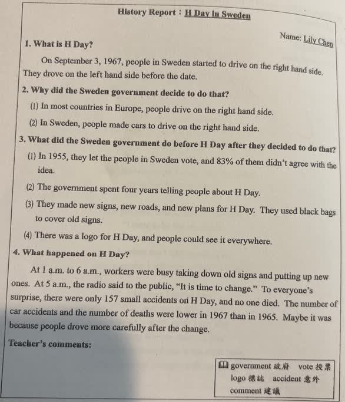

原對話閱讀提問｜白話文
完整原題
作答所需文章／材料
History Report: H Day in Sweden Name: Lily Chen 1. What is H Day? On September 3, 1967, people in Sweden started to drive on the right hand side. They drove on the left hand side before the date. 2. Why did the Sweden government decide to do that? (1) In most countries in Europe, people drive on the right hand side. (2) In Sweden, people made cars to drive on the right hand side. 3. What did the Sweden government do before H Day after they decided to do that? (1) In 1955, they let the people in Sweden vote, and 83% of them didn't agree with the idea. (2) The government spent four years telling people about H Day. (3) They made new signs, new roads, and new plans for H Day. They used black bags to cover old signs. (4) There was a logo for H Day, and people could see it everywhere. 4. What happened on H Day? At 1 a.m. to 6 a.m., workers were busy taking down old signs and putting up new ones. At 5 a.m., the radio said to the public, “It is time to change.” To everyone's surprise, there were only 157 small accidents on H Day, and no one died. The number of car accidents and the number of deaths were lower in 1967 than in 1965. Maybe it was because people drove more carefully after the change. Teacher's comments:（原卷此欄空白） 【原卷字詞】government 政府；vote 投票；logo 標誌；accident 意外；comment 建議。原對話提問：「白話文」。請閱讀下方完整報告。
先想一想，再查看答案、解說與原圖
完整中文譯文與重點如下。
詳細說明與解題步驟
【歷史報告：瑞典的H日】
姓名：Lily Chen。
一、什麼是H日？1967年9月3日，瑞典民眾開始靠右行駛。在這個日期以前，他們靠左行駛。
二、政府為什麼決定改變？歐洲大多數國家的民眾靠右行駛；瑞典製造的車輛也是供靠右行駛使用。
三、政府在H日前做了什麼？1955年讓瑞典民眾投票，其中83%不贊成這個想法；政府花四年向民眾宣導H日；為此製作新路標、道路與計畫，用黑袋遮住舊路標；設計專屬標誌，使人們到處看得到。
四、當天發生什麼事？凌晨1點到6點，工人忙著拆舊路標、裝新路標。5點時，廣播向大眾宣布改變的時刻到了。出乎大家意料，當天只有157起小事故，無人死亡。1967年的車禍及死亡人數比1965年少；文章推測，可能是改變之後大家開車更小心。
老師評語欄原本空白，沒有另填內容。
【閱讀與句型重點】
spent four years telling：花四年做宣導，spend＋時間＋V-ing。
were busy taking down...and putting up...：忙著拆下及裝上路標，兩個動作以and連接。
To everyone's surprise：令大家驚訝的是。the number of：……的數量；lower...than...：比……少。
Maybe表示推測，最後的原因不是文章已證明的唯一解釋。這裡按原報告翻譯，不把未拍到的第28、29題設問補成新選擇題。
核對註記：完整閱讀文及原對話白話文要求已核對；照片只有標示28–29的閱讀文，未見正式設問及選項，沒有補造這兩題。
原圖（僅本題）
